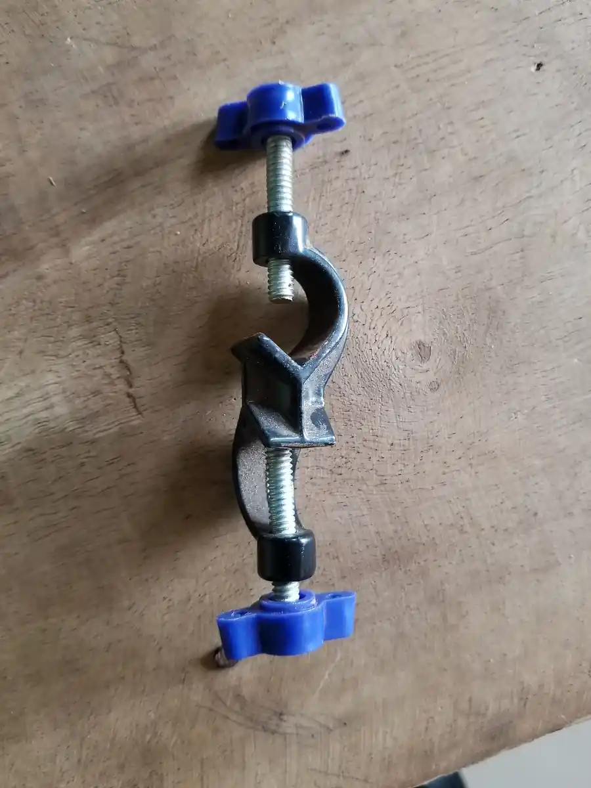

Family 300 · Racks, stands, clamps and boss heads
Racks by tube, stands by rod and base.
The hardware that holds the glass. Racks are listed by the hole they take, stands by the rod they carry and the base they stand on, clamps by the jaw, and boss heads by the rods they join.
Racks
By the diameter of the tube they hold, in millimetres.
Test-tube rack, polypropylene
Moulded, stackable and autoclave-proof, with rows of holes and drying pegs on the reverse.
for tubes of 13 mm · 16 mm · 20 mm · 25 mm · 30 mm
6, 12, 24 or 40 places
Test-tube rack, wooden
Beech, two tiers, with drying pegs: the traditional rack for a teaching bench.
for tubes of 16 mm · 20 mm · 25 mm
6 or 12 places
Test-tube rack, wire
Stainless wire, open, rinses clean and does not hold water.
for tubes of 13 mm · 16 mm · 20 mm
12 or 24 places
Drying rack, peg board
A wall board of pegs for inverted glassware, with a drip tray along the bottom edge.
32, 48 or 72 pegs
tray included
Pipette stand
Rotary or linear, for glass pipettes by length.
for pipettes to 360 mm
singly
Stands
Rod length and base mass are the two figures that matter.
Retort stand, cast-iron base
A threaded steel rod screwed into a rectangular cast-iron base. The heavier the base, the taller the load it will carry without rocking.
rod 500 mm · 600 mm · 750 mm · 1000 mm
base mass as listed
Retort stand, stainless base
Stainless base and rod for wet benches where cast iron rusts.
rod 600 mm · 750 mm
base mass as listed
Tripod
Three legs and a ring; takes a gauze or a pipe-clay triangle.
ring 100 mm · 125 mm · 150 mm
singly
Support ring
A ring with its own boss, to hang from a rod, for funnels and round flasks.
50 mm · 70 mm · 100 mm · 130 mm
inside diameter
Clamps
By the jaw and the opening it closes to.
Three-prong clamp
Two jaws, one of them forked, cork-lined; holds a flask by the neck.
opening to 80 mm
rod 12 mm
Two-prong clamp
Flat jaws for tubes and small flasks.
opening to 50 mm
rod 12 mm
Burette clamp
Double and spring-loaded, holding two burettes side by side on one rod.
two places
rod 12 mm
Clamp with cast boss
A clamp with its own boss cast on: one fewer part to lose.
opening to 60 mm
for rods of 12 mm to 16 mm
Boss heads
By the rods they join.
Boss head, right angle
Joins the stand rod to a clamp rod at ninety degrees; two thumbscrews.
for rods of 10 mm to 16 mm
singly
Boss head, swivel
The same with a pivot, so the clamp can be set at an angle.
for rods of 10 mm to 16 mm
singly
Thumbscrews
The part that goes missing, listed by thread.
by thread
in tens
Loading a stand
So it does not topple. Five lines a stockroom repeats on every stand it sends.
Keep the load over the base
A stand tips when the centre of mass of the load sits outside the footprint of the base. Mount the clamp so the flask hangs over the base, not out beyond its edge; if the geometry forces an overhang, the base has to be the heavier one on the list.
Low is stable
The lower a load sits on the rod, the shorter the lever it makes. Clamp at the lowest useful height and raise the flask only as far as the work needs.
Boss above clamp
Fix the boss head so the clamp rod passes through it with the clamp on the side of the flask, and tighten the boss to the stand rod first, the clamp rod second. A boss tightened in the wrong order slips when the flask is filled.
Hold the neck, not the belly
A three-prong clamp closes on the neck of a flask where the glass is thick and round. Closing on the body of a beaker or the belly of a flask cracks it and holds nothing.
Push before you pour
Before anything is poured, push the top of the rod with one finger. If the base rocks, the load is wrong: move it, do not pour.
Not carried
The limits of this family.
Custom fabrication
We do not weld, cut or make stands to a drawing.
Not offered
Safety fittings
Nothing here is sold as a safety device. The five notes above describe how a loaded rod behaves; they are not a judgement on your own assembly, and they do not stand in for the rules your bench works to.
Not assessed
Repair
A bent rod is replaced, not straightened; a cracked base is replaced, not welded.
Not offered

Plate 4
A right-angle boss head with its two thumbscrews, off the rod. The thumbscrews are the part that goes missing.